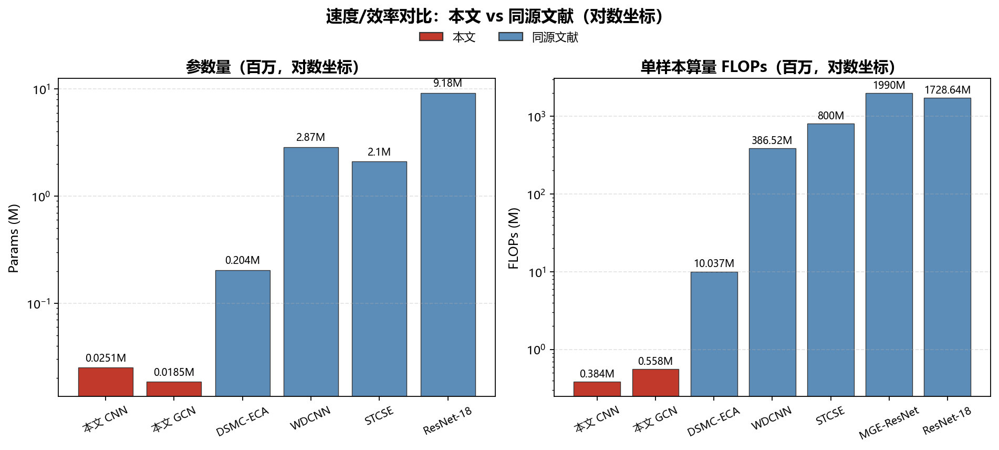

SEU 旋转机械故障诊断 · 按导师"同库、同任务、同划分、同指标"口径汇总
一句话结论：在同一 SEU 数据集、同类 5 分类任务上，文献里常见的方法（CNN、LSTM、Transformer、BP、AlexNet、BiLSTM、ResNet18 等）普遍比本文低 3~35 个百分点；只有在面对各论文"自报最优那个数"（99.15%~99.6%）时才是同一档。
| 任务 | 工况 | 准确率 |
|---|---|---|
| 轴承 | 20-0 / 30-2 | 99.85% ~ 100% |
| 齿轮 | 20-0 / 30-2 | 97.69% ~ 99.85% |
均为单工况各自建模、5 分类（轴承：Ball/Comb/Health/Inner/Outer；齿轮：Chipped/Health/Miss/Root/Surface）。
| 来源文献（年份） | 方法 | 准确率 | 我们 |
|---|---|---|---|
| Kibrete, J. Eng. Wiley 2025 | CNN / LSTM | 94.12% / 94.90% | 97.69~99.85% |
| 多模态融合, ACM 2025 | Transformer / CNN | 71.08% / 97.27% | |
| IAMCNN, 华东理工学报 2024 | BP / CNN / LSTM | 90.44% / 93.52% / 96.75% | |
| CNN-LSTM+注意力, AMMMP 2024 | LSTM / CNN / CNN-LSTM | 90.75% / 92.90% / 94.82% | |
| CA-DRSN, Sci Rep 2024（加噪） | AlexNet / BiLSTM / ResNet18 | 77.7% / 91.1% / 95.5% | |
| FEMSN, arXiv 2025（强噪声 −10dB） | WDCNN / ResNet50 / DenseNet | 66.16% / 78.54% / 74.07% | |
| SVMD 熵+机器学习, Algorithms 2023 | KNN/SVM/RF/GBDT | 89.41~96.02% |
| 来源文献（年份） | 方法 | 准确率 | 我们 |
|---|---|---|---|
| 多模态融合, ACM 2025 | Transformer / CNN | 63.56% / 89.50% | 99.85~100% |
| SVMD 熵+机器学习, Algorithms 2023 | SVM / k-NN（30-2） | 94.12% / 97.25% | |
| SVMD 熵 全网格 | 传统方法区间 | 91.76~99.61% |
| 来源文献 | 方法 | 准确率 | 不同点 |
|---|---|---|---|
| MGE-ResNet, Processes 2025 | SVM / TICNN 等 | 81.46% / 88~98% | 轴承 10 类（两工况合并） |
| IIETA MSRC+CBAM 2025 | LeNet / AlexNet / MSCNN | 79.57% / 97.33% / 94.19%（60% 训练） | 划分比例不同，4 任务 |
| SCBM-Net, Sci Rep 2025 | 其方法 | 98.33% | 轴承 10 类 |
| SAGAN-IResNet, Sci Rep 2025 | 其方法 | 92.57~98.50% | 少样本设置 |
| Deep Ensemble 多形态融合, Sensors 2025 | 单测点 WDCNN | <93%（半数 <80%） | 单通道输入 |
准确率是同档，但速度/效率是本文最硬、最不容易被反驳的优势：CNN 仅 2.5 万参数 / 104 KB / 0.384 MFLOPs，单样本推理约 0.02~0.03 ms，吞吐 3.7 万~5.3 万 样本/秒；相比同源文献 参数少 8~366 倍、算量少 26~5000 倍、体积小 60 倍以上。
| 任务 | 架构 | 参数量 | 模型大小 | FLOPs/样本 | 单样本延迟 | 吞吐量 | 峰值显存 |
|---|---|---|---|---|---|---|---|
| 轴承 | CNN | 25,093 | 104 KB | 0.384 M | 0.028 ms | 36,529 /s | 18.2 MB |
| 轴承 | GCN | 18,549 | 79 KB | 0.558 M | 0.041 ms | 24,827 /s | 20.8 MB |
| 齿轮 | CNN | 25,093 | 104 KB | 0.384 M | 0.019 ms | 52,711 /s | 18.2 MB |
| 齿轮 | GCN | 18,549 | 79 KB | 0.558 M | 0.040 ms | 25,564 /s | 20.8 MB |
输入为 21×6×6 的符号化状态转移矩阵（非原始振动信号）；延迟按 batch=32 折算到单样本。
| 来源文献（年份） | 方法 | 参数量 | FLOPs | 单样本延迟 | 模型大小 |
|---|---|---|---|---|---|
| 本文 | CNN | 0.025 M | 0.384 M | 0.019~0.028 ms | 104 KB |
| 本文 | GCN | 0.019 M | 0.558 M | 0.040 ms | 79 KB |
| DSMC-ECA, Sensors 2026（SEU 齿轮） | 其方法 | 0.204 M | 10.037 M | — | — |
| ADGCC-Net, Processes 2025（SEU 轴承） | 其方法 | — | — | — | 0.082 MB |
| STCSE, Sage 2026（SEU 齿轮） | 其方法 | 2.1 M | 800 M | — | — |
| MGE-ResNet, Processes 2025（SEU 轴承） | 其方法 | — | 1,990 M | — | — |
| ADAMFFN, Machines 2026（SEU 齿轮） | 其方法 | — | — | 端到端 35 ms | 6.69 MB |
| 港口起重机轻量化, Actuators 2026 | WDCNN | 2.87 M | 386.5 M | 3.64 ms | — |
| 同上 | ResNet-18 | 9.18 M | 1,728.6 M | 10.32 ms | — |
| 对比对象 | 参数少 | 算量（FLOPs）少 | 单样本延迟低 | 体积小 |
|---|---|---|---|---|
| DSMC-ECA | 8.1× | 26× | — | — |
| STCSE | 84× | 2,083× | — | — |
| MGE-ResNet | — | 5,182× | — | — |
| ADAMFFN（同 SEU 齿轮） | — | — | 约 290~420× | 约 65× |
| WDCNN（港口起重机） | 114× | 1,007× | 约 130~190× | — |
| ResNet-18 | 366× | 4,502× | 约 370~540× | — |
换句话说：别人一个样本的时间，本文能出几百个样本；别人装一个模型的内存，本文能装几百个。

图 1 本文与同源文献的参数量 / 算量对比（对数坐标）
效率部分的诚实边界
使用注意（避免被一句"设置不一样"驳回）
"准确率上，我在同一个 SEU 数据库上跟常见方法比，普遍高三到三十五个点，跟各篇里最好的那个数是一个水平。更硬的是'快'：我的模型只有 2.5 万个参数、104 KB、0.38 MFLOPs，一个样本 0.02 毫秒出结果，一秒能算 3.7 万到 5.3 万个样本；跟同源文献比，参数少 8 到 366 倍、算量少 26 到 5000 倍、体积小 60 倍以上。别人还要预处理加降噪，我这边符号矩阵直接进网络。所以'轻量、实时、省电'这条线，是明显站得住的。"
[1] Kibrete F. et al. Fault Diagnosis of Rotating Machines Based on Combination of 1D CNN and LSTM in Variable Working Conditions. Journal of Engineering (Wiley), 2025. DOI: 10.1155/je/1670810
[2] Research on Equipment Fault Diagnosis Method Based on Multimodal Deep Fusion. ACM CIISAI, 2025. DOI: 10.1145/3773365.3773555
[3] 基于改进注意力机制的 CNN 的齿轮箱故障诊断(IAMCNN). 华东理工大学学报(自然科学版), 2024. DOI: 10.14135/j.cnki.1006-3080.20231207002
[4] Fault Diagnosis of Gearbox Based on CNN and LSTM with Attention Mechanism. Highlights in Sci. Eng. Tech. (AMMMP 2024), Vol. 93.
[5] Zhang L. et al. Fault-Diagnosis Method for Rotating Machinery Based on SVMD Entropy and Machine Learning. Algorithms, 2023, 16(6): 304.
[6] Gearbox Fault Diagnosis in Noisy Environments Based on Deep Residual Shrinkage Networks (CA-DRSN). Scientific Reports, 2024. PMID: 39066029
[7] FE-MCFormer / FEMSN. arXiv:2505.06285, 2025.
[8] Bearing Fault Diagnosis Based on Multiscale Lightweight CNN (MGE-ResNet). Processes, 2025, 13(4): 1239.
[9] Deep Learning-Based Fault Diagnosis of Electromechanical Systems in Synchronous Motors (MSRC+CBAM). IIETA, 2025.
（速度/效率部分新增出处）
[10] Lightweight Gearbox Fault Diagnosis Under High Noise (DSMC-ECA). Sensors, 2026, 26(4): 1196.
[11] Bearing Fault Diagnosis with ADGCC-Net. Processes, 2025, 13(11): 3600.
[12] STCSE: ... Journal of Vibration and Control (Sage), 2026.
[13] Adaptive Domain-Aligned Multi-Modal Feature Fusion Network for Cross-Speed Fault Diagnosis of Planetary Gearboxes (ADAMFFN). Machines, 2026, 14(9): 960.
[14] Lightweight Fault Diagnosis of Port Crane Bearings ... Structured Pruning. Actuators, 2026, 15(6): 322.
[15] MSADC-TDA: multi-scale adaptive residual network combined with three-domain attention. J. Industrial and Management Optimization, 2026. DOI: 10.3934/jimo.2026110
[16] A Lightweight and Small Sample Bearing Fault Diagnosis Algorithm Based on Probabilistic Decoupling Knowledge Distillation and Meta-Learning. Sensors, 2024, 24(24): 8157.